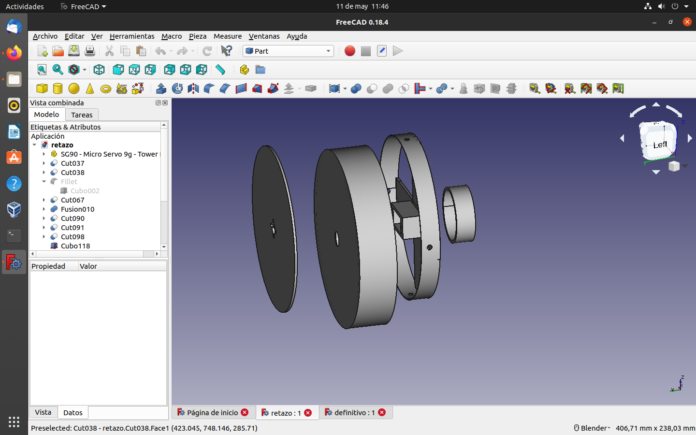
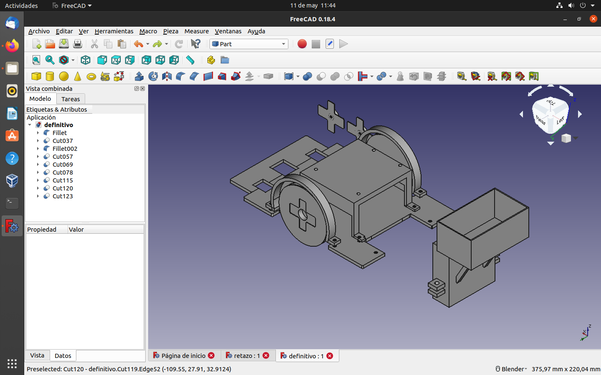
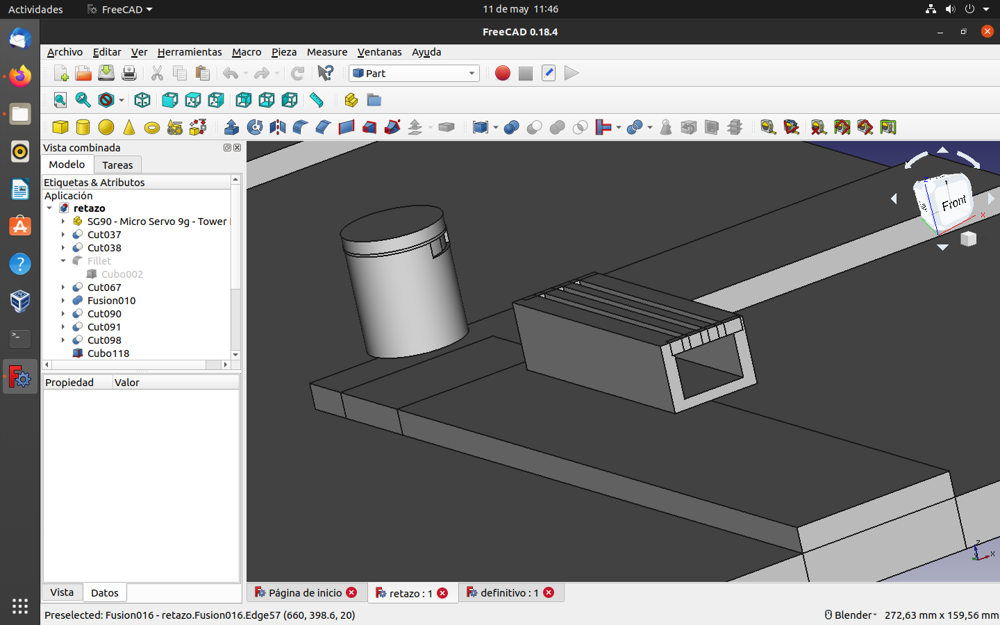

Teniendo en cuenta todo lo aprendido en el taller 3D hemos conseguido construir/diseñar una grúa y un coche en 3D.
Lo primero que construimos fue la base de la grúa y la base de donde va a ir, aunque la base con la carretera no la hemos imprimido dado que, no entraba en la máquina 3D. Esta pieza es una de las más importantes de la grúa puesto que, es la que hace girar toda la grúa está hecha por un cilindro y cuatro cuadrados fusionados. Luego hicimos otra pieza un poco más grande que la que tiene agujeros e hicimos fusión con todo.
Estas piezas son la base que hace girar toda la grúa la pieza más gruesa es la que va abajo luego la de su derecha está compuesta por un enganche para el motor y una apertura de la anterior pieza. la más pequeña va dentro para que haga funcionar el eje y la más plana está incorporada en la propia grúa.

Hemos hecho un poco de complementos como un banco y una papelera.
Simplemente en el taller construimos un coche 3D bastante bueno asique hemos cogido el mismo diseño y le hemos añadido algunas novedades como una mochila en el soporte de la caja de baterías y lo ampliamos un poco más para meter los sensores.
